週六固定找比較遠的沒去過的地方玩，因為沒去過雙溪，所以決定去雙溪+一直想去的三貂嶺舊隧道預約騎腳踏車
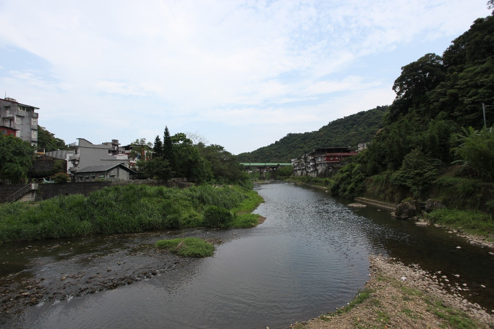
先看著google map走進雙溪老街，非常短，看點應該是兩側的建築跟街尾的渡船頭
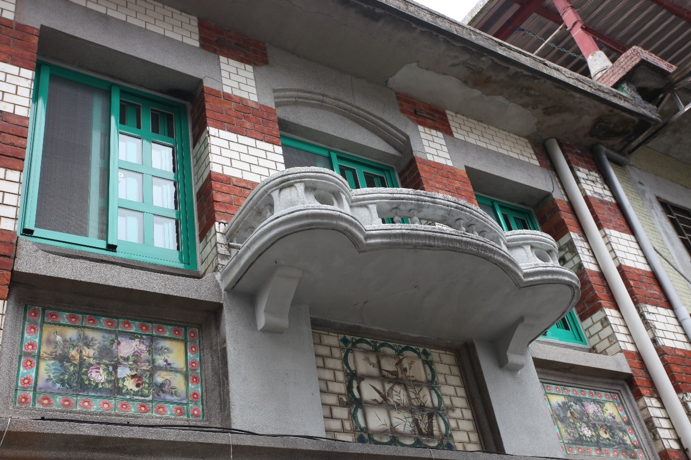
之後晃到了雙溪區公所，現在有活動，只要騎車或走路經過，分享給兩位好友就可以拿冰棒，送的是桂山冰棒，下重本，但吃光了所以我沒有拍。
往車站走的路上有一家餅店，跟風排了一個寒天布丁蛋糕，原本預期蛋糕裡面會有寒天塊，但是沒吃到，因為也吃光了所以沒拍。
雙溪晃完之後去牡丹站借車往隧道騎，車站到幹道的社區營造做得蠻不錯的，好像大部分都是車站出來的一家店的老闆做的，開車的話可以停在三貂運動公園，位置很多。
到隧道報到處之後會有人查QR code，預約兩點半提早半小時到可以進去，並不一定要真的等到預約時間才進去。
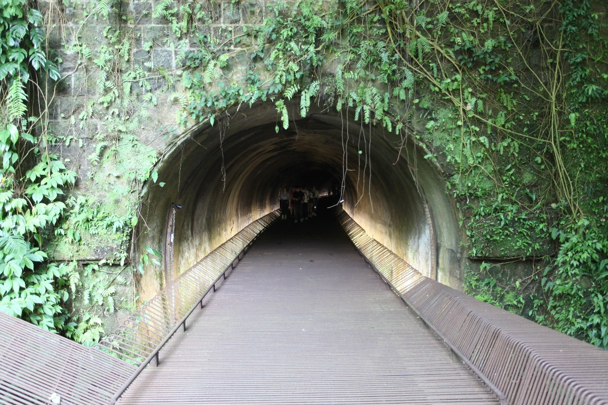
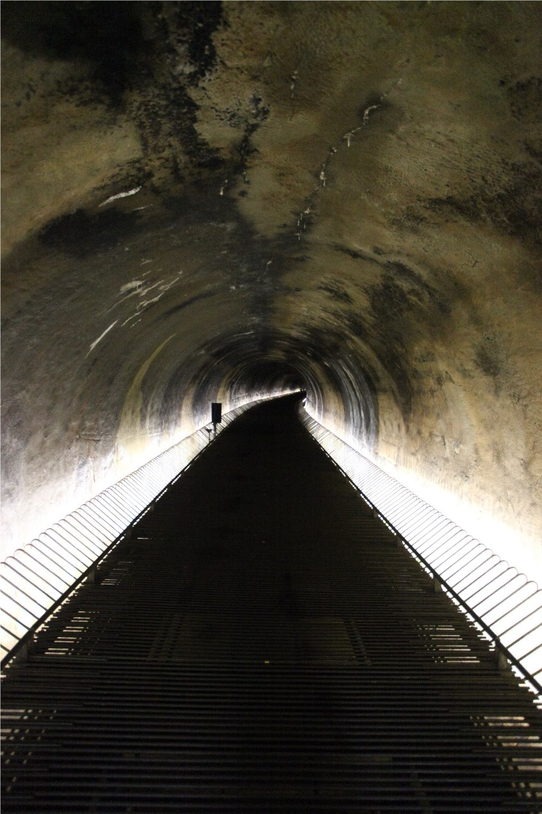
裡面絕大部分的景色跟隧道裡的圖片一樣，沒騎腳踏車的話可能有點無聊，看點大致集中在靠三貂嶺側的出口水影反光、兩隧道間的陽光照射下來，還有掛在隧道上面的蝙蝠，周圍會管制不能騎腳踏車，算是養活一些保全的生計，只是數量不多，很多人還會拿閃光燈照蝙蝠，可能以前一大部分跑光了。
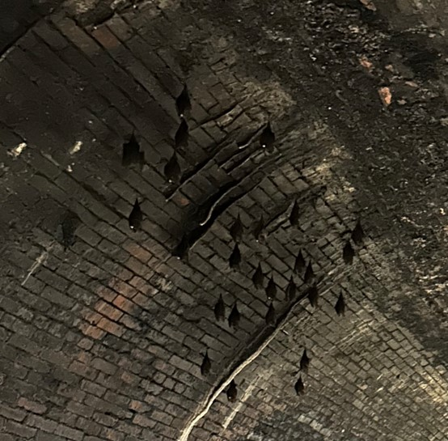
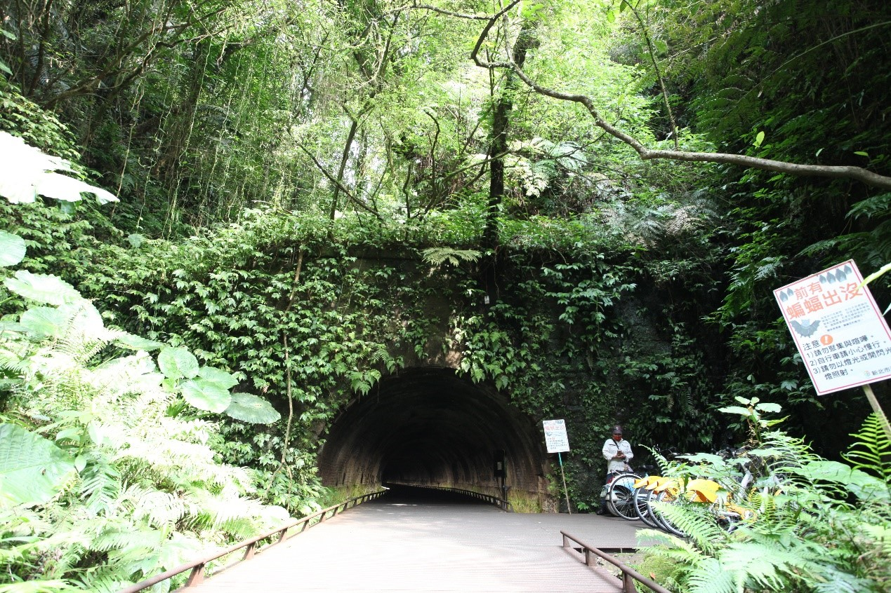
出去隧道後在三貂嶺站的對側，一路順遊三貂嶺回去車站坐回牡丹，可能是因為周六，所以開了很多文青店。
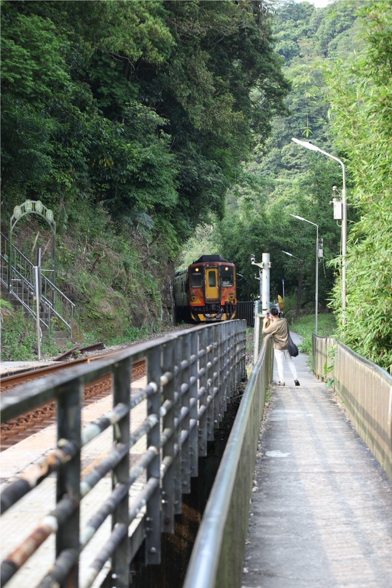
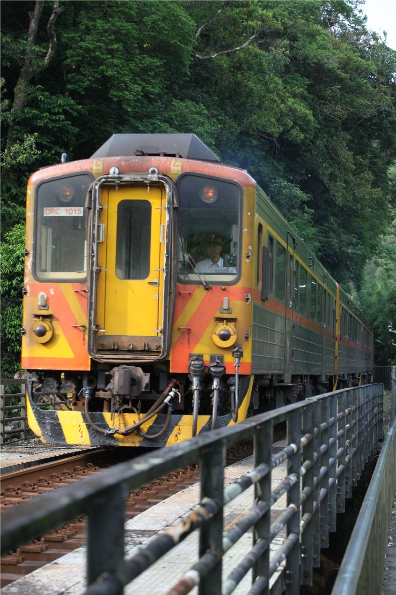
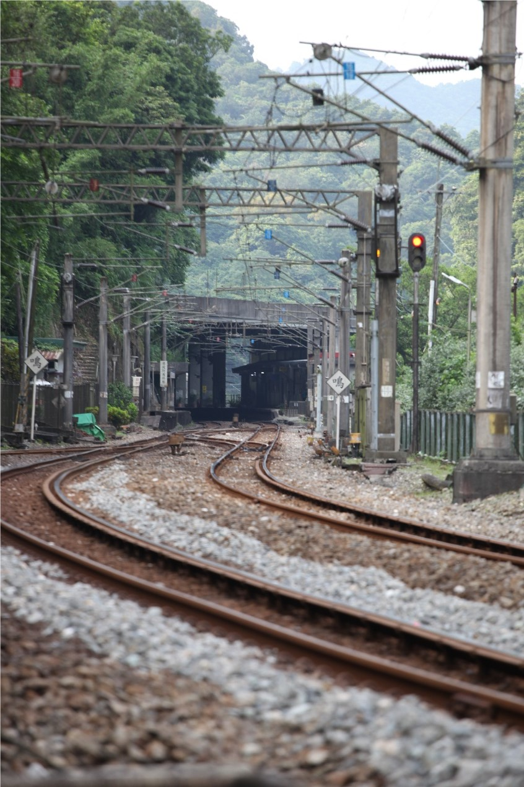
之後就坐回去牡丹了，列車開門的時候沒看到縫超大差點掉下去，站出來看發現這月台超彎。
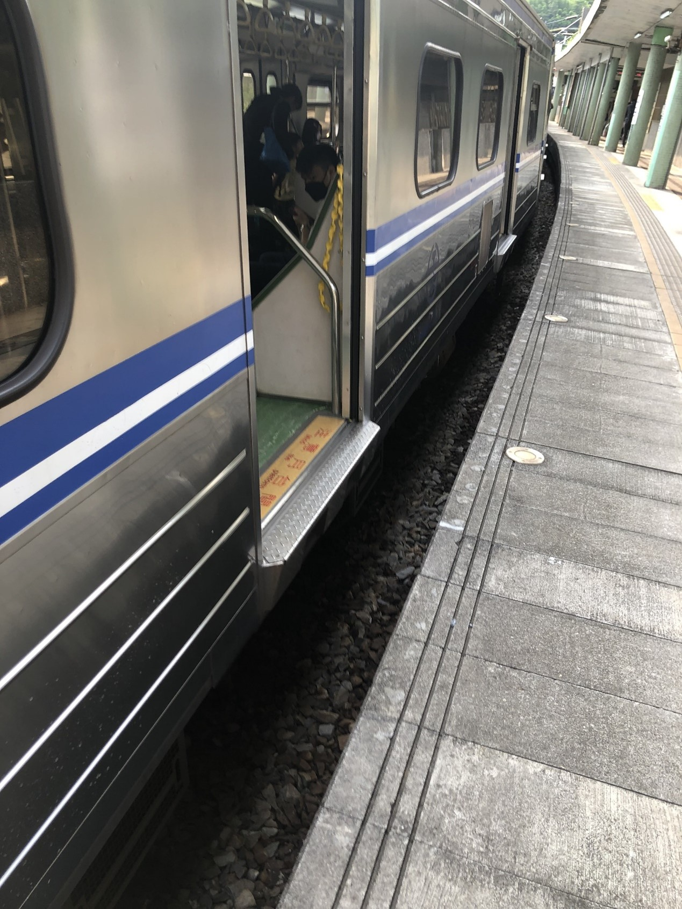
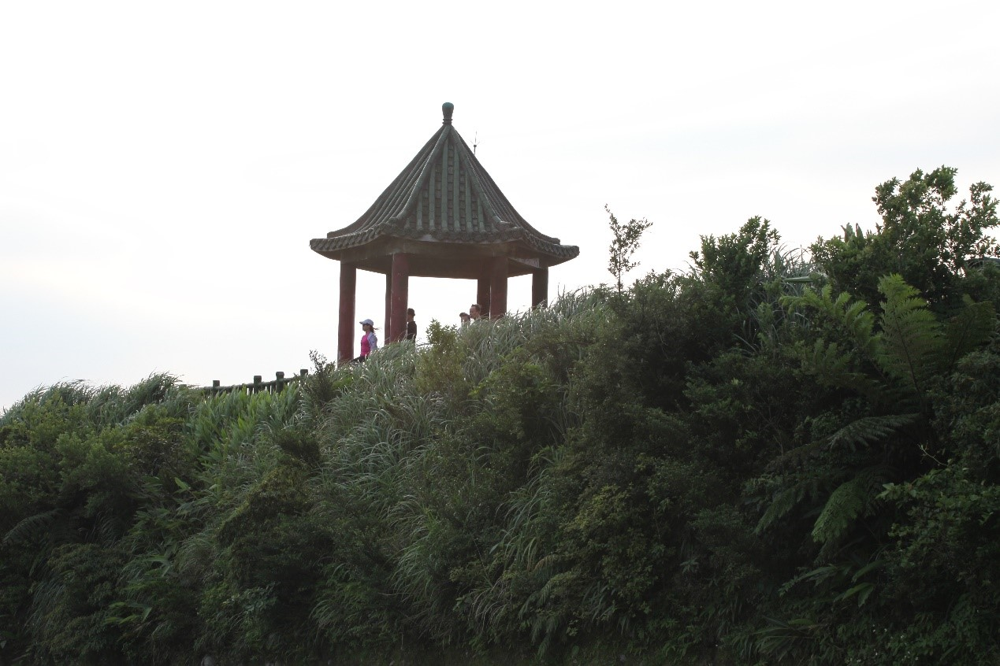
離開牡丹往不厭亭開，常常看到照片但沒有去過的地方，路上有遇到一個成功的學弟騎youbike也要往不厭亭，只是他看起來騎不太上去:(
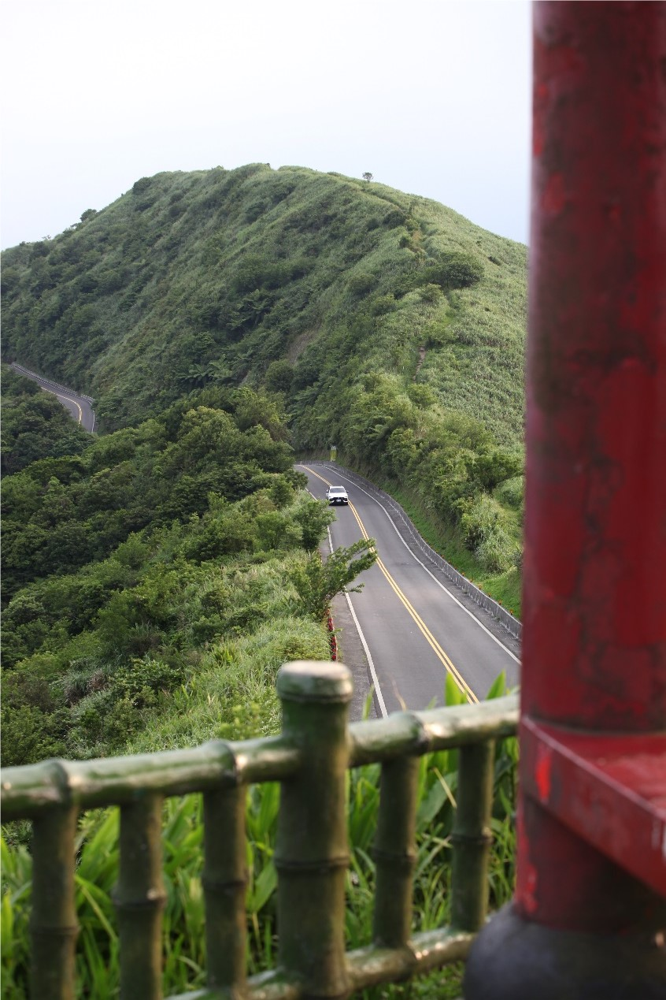
再來因為沒有油所以就趕去瑞濱加油了，沒有晚上的九份
筆者: NTUST So Hard